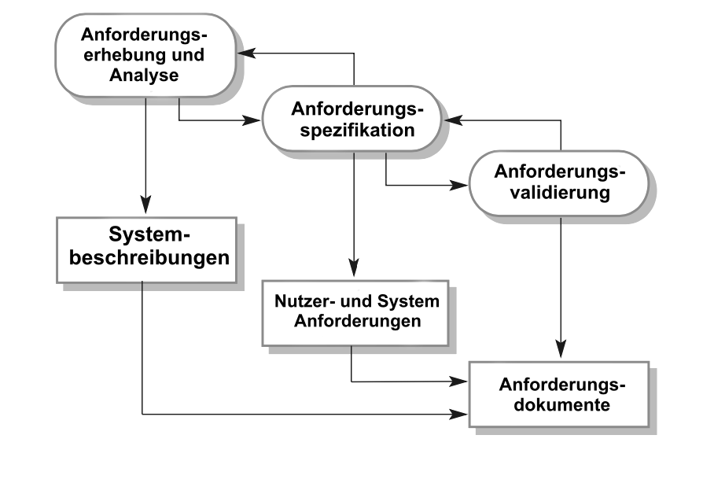

class: center, middle # Kapitel 02: Software processes Artem Shipilov --- ## Agenda <br> - Ziele - Einführung - Software-Prozessmodelle - Das Wasserfallmodell - Inkrementelle Entwicklung - Integration und Konfiguration - Prozessaktivitäten - Softwarespezifikation - Softwaredesign und Implementierung - Softwarevalidierung - Software evolution - Umgang mit Veränderungen - Prototyping - Inkrementelle Lieferung - Prozessverbesserung --- ## Ziele: <br> * die **Konzepte von Softwareprozessen** und -modellen verstehen; * wann **3 allgemeinen Software-Prozessmodelle** verwendet werden können; * die **grundlegenden Prozessaktivitäten** kennen; * verstehen, **warum** Prozesse **organisiert** werden sollten; * den Begriff der **Softwareprozessverbesserung** und die Faktoren verstehen. --- ## Einführung **Software Process** - Menge von Aktivitäten --> Softwareproduktion die Software Systeme - zu unterschiedlich <br> -> Es gibt keine allgemeingültige Software Engineering Methode <br> --> Es gibt keinen ideallen Software Prozess --- grundlegende Abläufe, die alle Softwareprozesse haben: <br> * **1. Softwarespezifikation.** - Anforderungen aufnehmen. * **2. Softwareentwicklung.** - Anforderungen umsetzen. * **3. Softwarevalidierung.** - Überprüfen, ob der Kund zufrieden ist. * **4. Weiterentwicklung von Software.** Veränderte Bedürfnissen des Kunden --> Arbeit. --- ## Einführung Aktivität setzt sich aus: 1. **Produkte oder Leistungen** - die Ergebnisse einer Prozessaktivität. 2. **Rollen** - Verantwortlickeit festlegen. 3. **Vor- und Nachbedingungen** - sind die Bedingungen bevor und nachdem die Prozesstätigkeit. <br> (z.b. Vorbedingung - Zustimmung von Anforderungen; <br> Nachbedingung - Validierung der UML-Modelle.) **unterschiedliche Prozesstypen:** - Sicherheitskritische Systeme - Stark Strukturierter Prozess nötig - Anwendungen mit hoher Frequenz bei neuen Anforderungen - flexibler, agiler Prozess - Bei großen Systemen - ein Gleichgewicht zwischen geplanter und agiler Entwicklung Unternehmen können der Software Prozess weiter optimieren. --- ## 1. Software-Prozessmodelle <br><br> Prozessmodelle (abstrakte Beschreibungen, ohne Details über einzelne Aktivitäten im Prozess): - Wasserfallmodell - Prozessaktivitäten - als seperate Phasen - Inkrementelles Modell - Verknüpfung aller Aktivitäten und inkrementelle Entwicklung - Integration & Configuration - Entwicklung von wiederverwendbaren Softwaremodulen --- ## 1.1 Das Wasserfallmodell * Abgeleitet aus einem Entwiclungsprozessen für große militärische Projekte * Prozess als **stufenweise** Abfolge von Aktivitäten * Plan-driven Prozess * Jede Stufe - eine Aktivität <div style="margin-top:60px;"> <img style="width:100%;" src="img/01.png"/> </div> --- ## 1.1 Das Wasserfallmodell - Anforderungsdefinition: - grundliegende Anforderungen --> Systemspezifikation - System- und Softwaredesign: - Softwarespezifikation --> Softwareentwurf (Bestandteile und Beziehungen) - Implementierung und Unit-Tests: - Softwareentwurf --> eine Menge an Programmen - Test auf Unit Ebene --> funktionsfähige Softwaremodulen - Integration- und Systemtest: - Test des Gesamtsystems --> betriebsbereite Software - Betrieb und Instandhaltung: - Betrieb/Behebung von Fehlern/Weiterentwicklung <div style="width:50%;"> <img style="width:100%;" src="img/01.png"/> </div> <br> --- ## 1.1 Das Wasserfallmodell 1. Ergebnis jeder Stufe --> genehmigte Dokumente. 2. Die nächste Phase **beginnt nicht, bevor** die vorherige **abgeschlossen** wurde. 3. Hohe Herstellungskosten --> teuere Entwicklungsaktivität. 4. Sinnvoll für die Hardwareentwicklung mit der hohe Herstellungskosten. <br> Veränderungen der Anforderungen --> Verlangsamung des Prozesses. <br> Kunden/Entwickler können die **Spezifikation einfrieren** --> weitere Änderungen verhindern. * Probleme später gelöst/ignoriert/programmiert werden --> (möglich) schlecht strukturierte Systemen * (möglich) das System die Benutzerwünsche nicht erfüllt. die Softwarewartung kann zur Folge haben: - einige/alle vorherigen Phasen wiederholen --> die Anforderungen - gut durchdenken. --- ## 1.1 Das Wasserfallmodell - Anwendung Das System frühzeitig verfeinern --> das Wasserfallmodell ist geeignet: - Eingebettete Systeme - Software interagiert mit Hardware - Kritische Systeme - Sicherheitsanalyse der Spezifikation/Entwurfs, danach Entwickelung - Große Softwaresysteme - Teil der Systeme - die von mehreren Partnern - Hardware - nach ähnlichem Modell entwerfen - --> gemeinsames Modell für Hardware und Software. <br> - --> (möglich) unabhängige Entwicklung der Subsysteme Das Wasserfallmodell ist nicht geeignet: - informelle Teamkommunikation möglich --> die Anforderungen schnell ändern sich. **Hohe Kosten für die Entwicklung** einer Spezifikation --> **selten verwendet.** --- ## 1.2 Inkrementelle Entwicklung Software wird über mehrere Versionen entwickelt. - Erste Implementierung --> Feedback des Kunden --> Weiterentwicklung - Aktivitäten - eng verknüpft - schneller Austausch zwischen den Aktivitäten - heutzutage Häufigster Ansatz <div style="margin-top:60px;"> <img style="width:100%;" src="img/02.png"/> </div> --- ## 1.2 Inkrementelle Entwicklung - Vorteile - Umsetzung: Plan-driven/Agil/Kombination - Plan-driven: Festlegung aller zu lieferenden Inkremente - Agil: erste Inkremente festlegen --> dynamisch auf Anforderungen reagieren - "Natürlicher" Weg des Problem lösen - Im Alltag erarbeitende Lösung (nicht im vorhinein) - Lösung in Schritten - Geringere Kosten für Änderung an Anforderungen - weniger Aufwand für Analyse und Dokumentation - Feedback ist leichter einzuholen - der Kunde regelmäßig Inkremente sieht - vorzeitige Bereitstellung möglich - wenn nicht alle Funktionen enthalten --- ## 1.2 Inkrementelle Entwicklung - Nachteile aus Sicht des Management: - Systeme schnell entwickelt werden <br> -> ist es nicht kosteneffektiv, jede Version zu dokumentieren <br> --> Der Entwicklungsprozess ist nicht sichtbar - Die Systeme sind oft schlecht strukturiert. <br> Softwareänderungen - zunehmend schwerer und teurer. <br> Code - schlechter. - spezielle Werkzeuge und Techniken <br> -> schnelle Entwicklung <br> --> Inkompatibilität mit anderen Werkzeugen oder Techniken <br> ---> wenige Leute wissen, wie man mit ihnen umgeht - Feedback von Kunden <br> -> Experimenten mit neuer Software <br> --> Störung von normalen Geschäftsprozessen --- ## 1.3 Integration und Konfiguration Wiederverwendung wird oft benutzt. informelle Wiederverwendung --> seit Jahr 2000 weit verbreitet --> offizieller Softwareprozess Wiederverwendete Softwarekomponenten: 1. **Eigenständige Anwendungssysteme** - für bestimmte Umgebung. 2. **Sammlungen von Objekten** (Komponente) - für Komponenten-Framework. 3. **Webdienste** - für den Fernaufruf über das Internet <div style="margin-top:20px;"> <img style="width:100%;" src="img/03.png"/> </div> --- ## 1.3 Integration und Konfiguration - Phasen 1. **Anforderungsspezifikation** - Aufnahme der Anforderungen (ohne Details) 2. **Software-Erkennung und -Evaluierung** <br> Suche nach Komponenten, die den Anforderungen genügen <br> Systeme bewerten, beurteilen --> mit die Anforderungen geeignet sind. 3. **Verfeinerung der Anforderungen** unter Berücksichtigung der gefundenen Komponente <br> Wenn nichts gefunden wurde --> Rücksprung zur Anforderungsspezifikation, andere Lösungen suchen. 4. **Konfiguration des Anwenungssystems** - sofern die Anforderungen sich mit dem Standardsystem umsetzen lässt 5. **Komponentenanpassung und Integration** - wenn es kein Standartsystem gibt --> einzelne Komponente modifizieren und integrieren. <div style="margin-top:20px;"> <img style="width:100%;" src="img/03.png"/> </div> --- ## 1.3 Integration und Konfiguration - Zusammenfassung - Erheblicher Vorteil: <br> 1. Größe der entwickelnden Software - stark reduziert 2. geringere Kosten/Zeit - Nachteil 1. Kompromisse bei der Anforderungsanalyse. Ergebnis (möglich) - nicht der Kundenwunsch 2. Kontrolle über Gesamtsystem - schwierig (Harmonie zwischen Komponenten verschiedener Versionen). --- ## 2. Prozessaktivitäten Prozess - eine Abfolge von technischen, kollaborativen und Managementaktivitäten. Grundlegende Prozessaktivitäten: 1. Spezifikation 2. Entwicklung 3. Validierung 4. Evolution Durchführung der Aktivitäten hängt von: 1. Art der entwickelnden Software 2. Erfahrung/Kompetenz der Entwickler 3. Art der Organisation --- ## 2.1 Softwarespezifikation (Requirements Engineering) Das ist der Prozess des Verstehens, welche Funktionen benötigt werden. - Vor der Anforderungsanalyse: <br> Machbarkeitstudie - kurze Studien ob es einen Bedarf/Markt gibt und das finanziell/zeitlich realistisch. - **Ziel:** Vereinbarung eines Anforderungsdokument (Systemspezifikation/Kundenanforderungen) - Zwei Ebenen der Anforderungen: 1. für End-User/Kunde: high level Anforderungen 2. für Entwickler: mehr detalierte System spezifische Anforderungen --- ## 2.1 Softwarespezifikation 3 Hauptaktivitäten im Requirements Engineering: <div style="position:absolute; top:70px; right:10px; width:45%;">  </div> - **Anforderungserhebung und Analyse** - Aufnahme von Anforderungen - Beobachten von bestehenden Systemen - Gespräche mit Nutzern - Aufgabenanalyse - Entwicklung von Prototypen (möglich) - **Anforderungsspezifikation** - Gesammelte Information in einem Dokument - Formulierung von Anforderungen auf End-User Level (Kunde) und Systemlevel (Entwickler) - **Anforderungsvalidierung** - Überprüfung der Anforderungen hinsichtlich Umsetzbarkeit/Vollständigkeit - Qualität sicherstellen --> Fehler finden Aktivitäten laufen während der Analyse weiter, Anforderungen --> weiter verfeinert --- ## 2.2 Softwaredesign und Implementierung **Ziel:** eine ausführbare Software zu liefern. **Softwareentwurf** - Beschreibung der Struktur von: - implementierenden Software - der verwendeten Datenmodelle und -Strukturen - (selten) der Schnittstellen zwischen Systemkomponenten/Algorithmen Infos über die Plattform --> wie man die Prozesse integrieren soll <br> --> Plattformspezifikation/Entwurfsprozess. --- ## 2.2 Softwaredesign und Implementierung <br> Design Aktivitäten: 1. **Architekturenentwurf:** <br> -Gesamtstruktur des Systems <br> -Komponenten, ihre Beziehungen/Verteilung. 2. **Datenbankdesign:** <br> -Systemdatenstrukturen und wie die darstellen. <br> (Datenbank wiederverwenden/neue erstellen) 3. **Schnittstellendesign:** <br> Schnittstellen zwischen Systemkomponenten. <br> -Schnittstellenspezifikation. <br> -Komponenten separat entwickeln. 4. **wiederverwendbaren Komponenten.** <br> -wenn keine --> neue Komponente entwerfen. <br> -Komponentenbeschreibung/Implementierungsdetails <br> (Liste mit Änderungen / Designmodell mit UML Druck) <div style="position:absolute; top:120px; right:0px; width:45%;"> </div> --- ## 2.3 Softwarevalidierung - Phasen Validierungstechnik - Programmtests (unter Verwendung der Testdaten). <br> Überprüfungsprozesse sind möglich (in jeder Phase) - Meiste Zeit --> Test von Programmen. - Integriertes System wird auch getestet. - Benutzertest - Beta-Test --> Benutzerkommentare Die Phasen des Testprozesses: 1. **Komponententests** - jede Komponente unabhängig getestet. <br> Bespiel für ein Komponent - Funktionen oder Klassen. 2. **Systemtest** Komponenten --> Gesamtsystem. <br> (nicth)funktionale Anforderungen erfüllen. <br> Bei großen Systemen - mehrstufiger Prozess (Test von Subkomponenten). 3. **Kundentests** - von Systemkunden, mit realen Daten. <div style="margin-top:20px;"> <img style="width:80%;" src="img/06.png"/> </div> --- ## 2.3 Softwarevalidierung - **testgetriebene Entwicklung:** Tests --> Entwicklung - **plangesteuerter Softwareprozess:** Testplänen (aus der Spezifikation) --> Tests - In der Abbildung: Testpläne - Verbindung zwischen Test und Entwicklungsaktivitäten. - **V-Modell** - die Validierungsaktivitäten, die jeder Stufe des Wasserfallmodells entsprechen. - Beta-Testing ist möglich <div style="margin-top:20px;"> </div> --- ## 2.4 Software evolution - viel sinnvoller - Änderungen an der Software (nicht Hardware) Es gibt ein Prozess - Softwareevolution (Softwarewartung). **In der Abbildung:** die Software - Reaktion auf änderte Anforderungen und Kundenbedürfnisse. <div style="margin-top:20px;"> <img style="width:100%;" src="img/08.png"/> </div> --- ## 3. Umgang mit Veränderungen Die Änderungen tragen **hohe Kosten** mit sich, weil: - Anforderungsanalyse wiederholen (ganz/teilweise) - (manchmal) alle Programme ändern --> System neu testen Ansätze, um die Kosten der Nacharbeit zu reduzieren: 1. **Erwartung ändern.** z.b. ein Prototypsystem entwickeln <br> --> Kunden die Merkmale des Systems zeigen --> Anforderungen verfeinern. 2. **Änderungstoleranz.** inkrementelle Form von Entwicklung - die vorgeschlagenen Änderungen in Schritten implementieren. <br> (Monolith -> Modulith -> Microservice) Möglichkeiten, mit Veränderungen umzugehen: 1. **System-Prototyping.** - schnelle Entwicklung einer Version des Systems(teils). <br> -die Anforderungen / die Machbarkeit von Designentscheidungen prüfen. 2. **Inkrementelle Lieferung.** <br> die Systeminkremente --> dem Kunden zur Kommentierung / Experimentieren. - Änderungsvermeidung - die vorzeitige Festlegung von Anforderungen für das gesamte System - Refactoring - die Struktur und Organisation von Programmen unterstützen --- ## 3.1 Prototyping **Prototyp** - eine frühe Version eines Softwaresystems, das wird oft bei Konzeption demonstriert. <br> --> Designoptionen / mögliche Lösungen **Ziel:** erforderliche Änderungen vorherzusehen: 1. Im Requirements-Engineering: Erhebung/Validierung von Systemanforderungen. 2. Im Systemdesignprozess: Softwarelösungen/Schnittstelle Im Software Engineering: erst ein/mehrere Prototypen --> ein Softwaresystem <br> Auch Designexperimente --> Machbarkeit vorgeschlagenes Designs. <br> z.b. Prototyp von Datenbankdesign --> Überprüfung vom Datenzugriff für die Benutzerabfragen --> Benutzerschnittstellen. --- ## 3.1 Prototyping Die Ziele des Prototyping sollen von Beginn des Prozesses eingeplant werden. Ohne Ziele - schwierig die Funktionen verstehen. Die nächste Phase: was in das Prototyp eingefügt/weggelassen soll. --> Kostensenkung Die letzte Phase: Evaluierung des Prototyps. Ein allgemeines Problem: Verwendenung von Prototyp nicht wie endgültige System. <div style="margin-top:20px;"> </div> --- ## 3.2 Inkrementelle Lieferung Das ist ein Ansatz zur Softwareentwicklung, bei dem einige der entwickelten Inkremente an den Kunden geliefert und dort eingesetzt werden. <br> -> welche der Services sind dür sie wichtig/unwichtig --> die Lieferinkremente die Dienste mit der höchsten Priorität - zuerst Während der Entwicklung --> (kann) weitere Anforderungsanalyse für spätere Inkremente (nicht zum aktuellen). <div style="margin-top:20px;"> <img style="width:100%;" src="img/10.png"/> </div> --- ## 3.2 Inkrementelle Lieferung - Vorteile 1. Inkrement fertiggestellt --> 2. bei dem Kunden installiert --> 3. Sie experimentieren mit dem System --> 4. Anforderungen für spätere Systemerweiterungen --> 5. neue Inkremente --> 6. Integrierung mit bestehenden Inkrementen Vorteile von inkrementellen Lieferung: 1. frühen Inkremente - als Prototypen verwenden <br> --> Anforderungen für spätere Systemerweiterungen <br> --> Im Gegensatz zu Prototypen sind Inkremente Teil des realen Systems <br> --> vollständige System verfügbar --> kein Umlernen 2. Das erste Inkrement erfüllt wichtigsten Anforderungen der Kunden <br> --> sie verwenden die Software sofort 3. Alle Vorteile der inkrementellen Entwicklung <br> --> relativ einfach Änderungen zu integrieren 4. Die wichtigsten Systemdienste werden am meisten getestet. <br> --> weniger wahrscheinlich von Softwarefehler --- ## 3.2 Inkrementelle Lieferung - Nachteile 1. Problematisch, das **bestehende System durch ein neues ersetzen.** <br> -Die Benutzer brauchen alle Funktionen des alten Systems <br> -Sie sind nicht bereit das neue System zu testen <br> -Man soll nicht das alte und das neue System nebeneinander verwenden <br> --> unterschiedliche Datenbanken / Benutzeroberflächen 2. Schwierig, **gemeinsame Einrichtungen zu identifizieren,** die von allen Inkrementen benötigt werden. 3. **Spezifikation & Software werden zusammen entwickelt.** <br> --> keine vollständige Systemspezifikation, bis das endgültige Inkrement spezifiziert ist. <br> --> erfordert eine neue Vertragsform - für Großkunden/ Regierungsbehörden schwierig --- ## 4. Prozessverbesserung Es gibt eine Nachfrage nach billigerer, besserer Software - in kürzeren Fristen Ansätze zur Prozessverbesserung: - **Der Prozessreife Ansatz:** - Verbesserung von Prozess- und Projektmanagement. - Einführung guter Softwareengineering Praktiken. **Ziele:** bessere Produktqualität und Prozessvorhersagbarkeit. - **Der agile Ansatz** - iterative Entwicklung - Reduzierung von Gemeinkosten. **Ziele:** schnelle Bereitstellung von Funktionen und die Reaktionsfähigkeit auf sich ändernde Kundenanforderungen. - konzentrieren sich auf den zu entwickelnden Code - reduzieren bewusst Formalität und Dokumentation. --- ## 4. Prozessverbesserung - Der Prozessreife Ansatz Die Phasen in diesem Prozess sind: 1. **Prozessmessung:** ein/mehrere Attribute gemessen werden. <br> --> Grundlage, ob Prozessverbesserungen wirksam/nicht. 2. **Prozessanalyse:** --> Prozessschwächen und Engpässe. <br> --> Prozessmodelle, die den Prozess beschreiben. (z.b. Schnelligkeit und Robustheit) 3. **Prozessänderung:** - Prozessschwächen beheben. <div style="margin-top:20px;"> <img style="width:100%;" src="img/11.png"/> </div> --- ## 4. Prozessverbesserung - Stufen der Prozessreife Die Ebenen im Prozessreifemodell sind: 1. **Initialisierung.** - der Umgang der Arbeit für Prozesse festlegen und mitteilen. 2. **Verwaltung.** Projektplan --> Projektziele. Ressourcenmanagement und die Prozessüberwachung. 3. **Definierung.** - Standardisierung/Einsatz von Prozessen. 4. **Quantitative Verwaltung.** Prozess- und Produktmessungen --> im Prozessmanagement 5. **Optimierung.** Prozess- und Produktmessungen --> Prozessverbesserung. Trends analysieren. formelle Prozessverbesserung --> Verbesserungen der Software-Engineering-Fähigkeiten. <br> Aber für kleine Unternehmen - zu viel Overhead. <div style="margin-top:20px;"> <img style="width:100%;" src="img/12.png"/> </div>